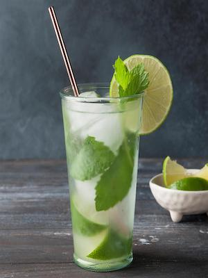

The Real Mojito

What is it?
The cocktail often consists of five ingredients: white rum, sugar (traditionally sugar cane juice), lime juice, soda water, and mint. Its combination of sweetness, citrus, and herbaceous mint flavors is intended to complement the rum, and has made the mojito a popular summer drink.
Ingredients
- 10 Fresh Mint Leaves
- 1/2 Medium Lime, cut into 3 wedges
- 2Tbsp White Sugar
- Ice
- 1 1/2oz White Rum
- 3-4oz Club Soda
Directions
Place mint leaves and 1 lime wedge into sturdy glass. Use a muddler and crush to release mint oils and lime juice.
Add remaining lime wedges and sugar, muddle again to release the lime juice. !DO NOT STRAIN THE MIXTURE!
Fill the glass with ice. Pour in rum and top off with club soda
Stir, Garnish with lime wheel and Enjoy